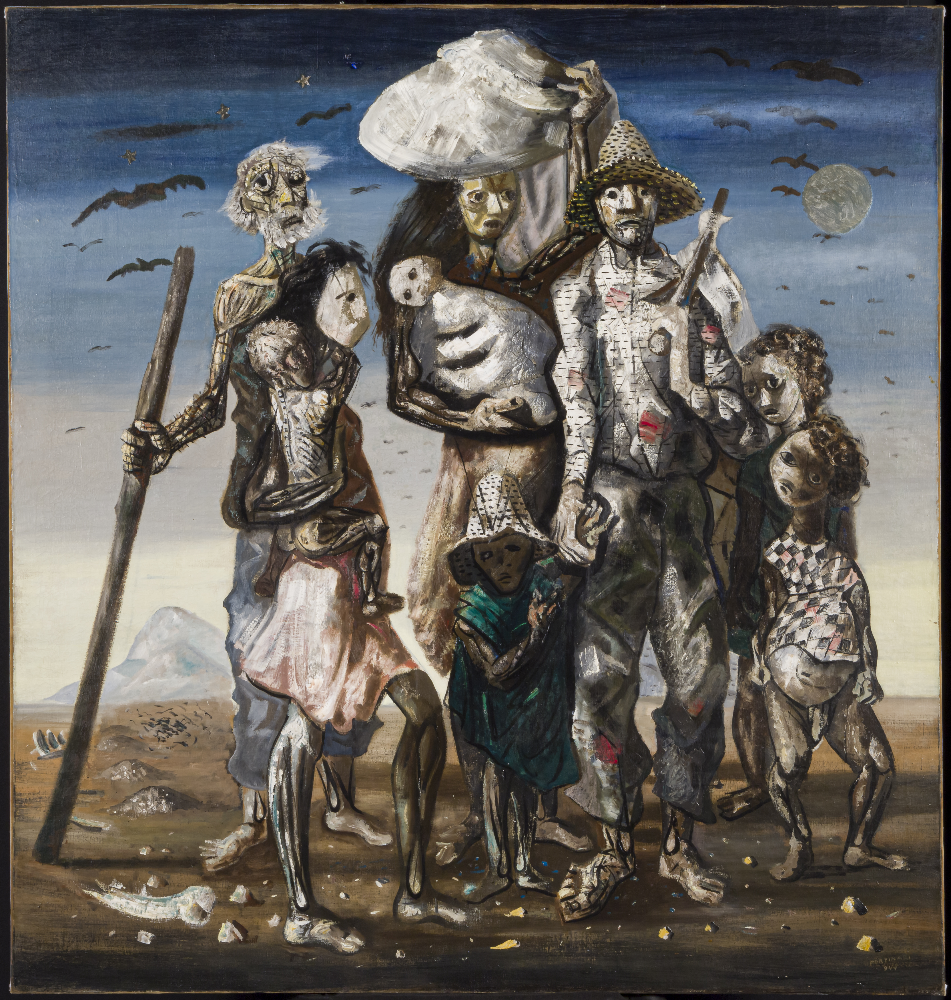

Retirantes
Artista: Cândido Portinari
Ano: 1944
Descrição: Retrata uma família nordestina fugindo da seca, com expressões de sofrimento, fome e miséria. Portinari buscou denunciar as desigualdades sociais do Brasil através de uma pintura forte e realista.